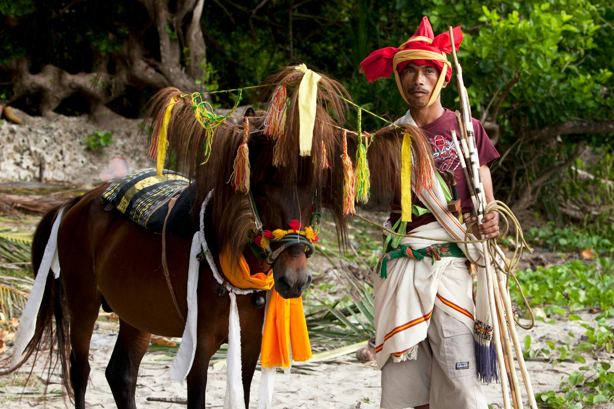
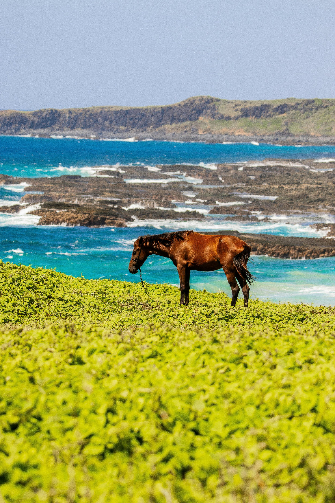
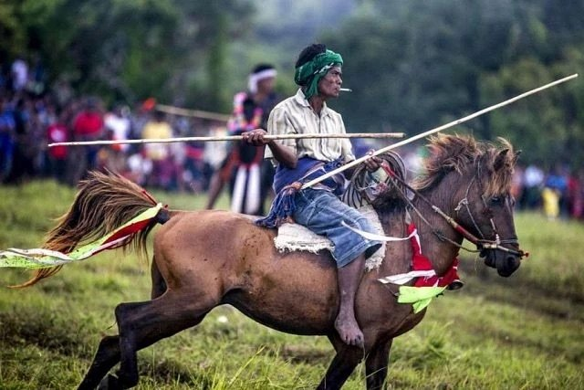
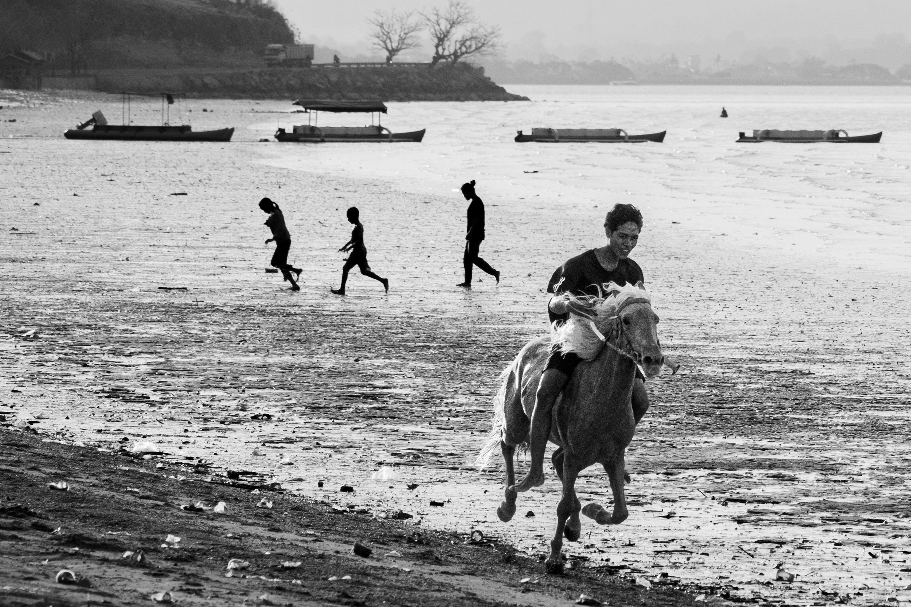

Sumba, Indonesia: Where the Sandalwood Pony Still Runs Free
Unlike the lush jungles of Bali or Java’s volcanic plains, Sumba feels older — more elemental. It’s a land where traditions endure: where water buffalo are still sacrificed during funerals, and where ancestral spirits are honoured in megalithic stone graves that rise from village squares like monuments to time itself. Sumba isn’t polished, and that’s part of its pull.
For travellers seeking raw beauty and cultural depth, it offers something quietly extraordinary — especially if you’re willing to follow the trail of the Sandalwood pony.

The Sandalwood Pony: Pride of Sumba
Small but spirited, the Sandalwood pony — or kuda Sumba — is more than just a mode of transport. Shaped over generations by trade, climate, and terrain, these ponies are known for their endurance, intelligence, and agility. They often roam semi-wild in the island’s interior until called upon for work, ceremony, or ritual.
Their legacy is inseparable from the island’s. Once prized by the Javanese and exported across Southeast Asia, they shared the name of another treasured export: sandalwood, the fragrant timber that once blanketed Sumba’s hills. Today, the ponies remain a living thread through Sumba’s cultural fabric — symbols of heritage, status, and spiritual connection.

A Land Apart
Sumba sits east of Lombok and west of Flores, off the main tourist trail that connects Bali to Komodo. Its landscape is strikingly different from the rest of Indonesia: arid savannahs roll across the interior, dramatic coastline edges the south, and traditional clan villages — each centred on a stone grave — dot the hillsides in a way that feels untouched by the modern world.
The island is divided roughly along east–west lines. West Sumba is more traditional, its villages still deeply rooted in the Marapu animist belief system. East Sumba opens onto sweeping vistas and is slightly more accessible, while remaining far quieter than Indonesia’s more visited islands.

Sumba — At a Glance
- Location: East Nusa Tenggara, Indonesia — east of Lombok, west of Flores
- Island character: Arid savannahs, megalithic stone graves, animist clan villages
- Horse breed: Sandalwood pony (kuda Sumba) — small, enduring, semi-wild
- Key event: Pasola — ritual mounted spear battle held during rice-planting season
- Best time: February–March for Pasola; May–October for dry weather and trekking
- Getting there: Short daily flights from Bali or Kupang
- East vs West: West Sumba more traditional; East Sumba wider vistas, fewer tourists
Pasola: Ritual Warfare on Horseback
No visit to Sumba is complete without witnessing Pasola, the island’s most intense and iconic cultural event. Held during the rice-planting season — typically February or March — this ritual battle sees rival clans charge at one another on horseback, flinging wooden spears in a symbolic contest of strength, fertility, and ancestral blessing.
It’s raw and visceral — part sport, part sacred rite. The Sandalwood ponies are central to the spectacle, their agility and training on full display as riders thunder across the field, bareback and bold. Pasola isn’t a performance for tourists. It’s a living expression of Sumba’s indigenous Marapu belief system, where the boundary between past and present — spirit and soil — is still wide open.
“The Sandalwood ponies are central to the spectacle — bareback riders thundering across the field in a contest that is part sport, part sacred rite.”

A Different Kind of Escape
Sumba is still relatively undeveloped — but that’s part of its magic. A few eco-lodges and boutique resorts have begun to welcome travellers seeking a more grounded, meaningful form of luxury. Many work directly with local horsemen, offering riding experiences that are intimate, respectful, and rich in connection.
You can ride through golden savannahs, visit traditional weavers in remote hill villages, or walk along untamed beaches where the only sound is wind and horses. This is not a place you pass through. It’s a place that stays with you.

Travel Tips
- Getting there: Short daily flights from Bali (Ngurah Rai) or Kupang connect to Tambolaka (West Sumba) and Waingapu (East Sumba)
- Best time to visit: February–March for Pasola season; May–October for dry weather and trekking conditions
- Where to go: West Sumba for Pasola and traditional villages; East Sumba for sweeping vistas and quieter exploration
- Ethical riding: Choose guides and stables that prioritise horse welfare and community-based tourism
- What to bring: Light layers, sun protection, and a genuine curiosity — Sumba rewards the unhurried traveller
Related Stories

Pushkar Horse & Camel Fair: A Sacred Stage for India’s Marwari Majesty
Every November in Rajasthan, the Pushkar Mela transforms a Hindu pilgrimage into one of the world’s most colourful livestock festivals — and a rare window into India’s equestrian culture.

The Horses of the Camargue
Tough, white, and semi-feral, the Camargue horse is a living part of southern France’s wetland culture — shaped by the land it roams.

The Marwari: Built for the Desert, Bred for Loyalty
The Marwari horse was shaped by the desert, by war, and by generations of people who depended on it absolutely — recognisable above all by its inward-curving ears.